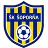

Zápasy
Sezóna 2026/27, všetky tímy. Výsledky, strelci a zostavy sa dopĺňajú zo Sportnetu.
Program
marec 2027
-
6. 3.so · 14:30
Match dayFC PataA-mužstvo · doma · 16. kolo

-
14. 3.ne · 14:30
Match dayTJ ImeľA-mužstvo · vonku · 17. kolo

-
20. 3.so · 15:00
Match dayAFC Nové Mesto nad VáhomA-mužstvo · doma · 18. kolo

-
21. 3.ne · 12:30
Match dayFK VoderadyU15 · vonku · 14. kolo

- 21. 3.ne · 15:00 Match dayŠportový klub NaháčB-mužstvo · doma · 14. kolo
-
27. 3.so · 15:00
Match dayFC Nitra BA-mužstvo · vonku · 19. kolo

-
27. 3.so · 15:00
Match dayŠK Cífer 1929 BB-mužstvo · vonku · 15. kolo

-
28. 3.ne · 12:30
Match dayTJ Iskra - Horné OrešanyU15 · doma · 15. kolo

apríl 2027
- 3. 4.so · 12:00 Match dayOŠK SmoleniceU9 · vonku · 12. kolo
-
3. 4.so · 16:00
Match dayFC TopoľčanyA-mužstvo · doma · 20. kolo

- 4. 4.ne · 10:00 Match dayOŠK SmoleniceU11 · vonku · 12. kolo
-
4. 4.ne · 13:00
Match dayOŠK ZavarU15 · vonku · 16. kolo

-
4. 4.ne · 15:30
Match dayTJ Slovan OstrovB-mužstvo · doma · 16. kolo

-
10. 4.so · 12:00
Match dayAkadémia Procházka & Bukata PečeňadyU9 · doma · 13. kolo

- 10. 4.so · 16:00 Match dayOFK TrebaticeA-mužstvo · vonku · 21. kolo
- 11. 4.ne · 10:00 Match dayOŠK Križovany nad Dudváhom BU11 · doma · 13. kolo
-
11. 4.ne · 13:00
Match daySFC KopánkaU15 · vonku · 17. kolo

- 11. 4.ne · 15:30 Match dayOŠK Dolné LovčiceB-mužstvo · vonku · 17. kolo
-
17. 4.so · 10:30
Match daySFC Kopánka BU13 · vonku · 10. kolo
-
17. 4.so · 12:00
Match dayTJ FC KátlovceU9 · vonku · 14. kolo

-
17. 4.so · 16:30
Match dayOFK Dynamo Malženice BA-mužstvo · doma · 22. kolo

-
18. 4.ne · 10:00
Match dayTJ Slovan ČerveníkU11 · vonku · 14. kolo

-
18. 4.ne · 13:30
Match dayŠK RAPID Hrnčiarovce nad ParnouU15 · doma · 18. kolo

-
18. 4.ne · 16:00
Match dayTJ Družstevník BíňovceB-mužstvo · doma · 18. kolo

-
24. 4.so · 10:30
Match dayTJ Družstevník DechticeU13 · doma · 11. kolo

-
24. 4.so · 12:00
Match dayTJ Iskra - Horné OrešanyU9 · doma · 15. kolo
-
24. 4.so · 16:00
Match dayŠK PečeňadyB-mužstvo · doma · 19. kolo

-
24. 4.so · 16:30
Match dayMestský futbalový klub GbelyA-mužstvo · doma · 23. kolo

-
25. 4.ne · 10:00
Match dayTJ Iskra - Horné OrešanyU11 · doma · 15. kolo
máj 2027
-
1. 5.so · 10:30
Match dayOŠK Dolná KrupáU13 · vonku · 12. kolo

-
1. 5.so · 12:00
Match dayTelovýchovná jednota Veľké KostoľanyU9 · vonku · 16. kolo

-
1. 5.so · 17:00
Match dayFK Slovan LeviceA-mužstvo · vonku · 24. kolo

-
2. 5.ne · 10:00
Match dayTelovýchovná jednota Veľké KostoľanyU11 · vonku · 16. kolo
-
2. 5.ne · 16:30
Match dayFK ŠulekovoB-mužstvo · vonku · 20. kolo

-
8. 5.so · 10:30
Match dayŠPORTOVÉ KLUBY BLAVA 1928U13 · doma · 13. kolo

-
8. 5.so · 12:00
Match dayTJ Elastik BohdanovceU9 · vonku · 17. kolo

-
8. 5.so · 17:00
Match dayŠPORTOVÉ KLUBY BLAVA 1928A-mužstvo · doma · 25. kolo
-
9. 5.ne · 10:00
Match dayTJ Elastik BohdanovceU11 · vonku · 17. kolo
-
9. 5.ne · 16:30
Match dayTJ Družstevník VlčkovceB-mužstvo · doma · 21. kolo

-
15. 5.so · 10:30
Match dayTJ FC KátlovceU13 · vonku · 14. kolo
-
15. 5.so · 12:00
Match dayTJ Družstevník ZvončínU9 · doma · 18. kolo

-
15. 5.so · 17:00
Match dayFK Spartak Dubnica nad VáhomA-mužstvo · vonku · 26. kolo

-
16. 5.ne · 10:00
Match dayFK ŠulekovoU11 · doma · 18. kolo
- 16. 5.ne · 17:00 Match dayTJ Sokol TrstínB-mužstvo · vonku · 22. kolo
-
22. 5.so · 10:30
Match dayTJ Iskra - Horné OrešanyU13 · doma · 15. kolo
- 22. 5.so · 17:00 Match dayPFK PiešťanyA-mužstvo · doma · 27. kolo
-
22. 5.so · 17:00
Match dayTJ Vinohradník Suchá nad ParnouB-mužstvo · doma · 23. kolo

-
23. 5.ne · 10:00
Match dayMTK LeopoldovU11 · vonku · 19. kolo

-
29. 5.so · 10:30
Match dayTJ Družstevník ZvončínU13 · vonku · 16. kolo
-
29. 5.so · 12:00
Match dayOŠK RužindolU9 · doma · 20. kolo

-
29. 5.so · 17:00
Match dayOŠK Trenčianske StankovceA-mužstvo · vonku · 28. kolo

-
30. 5.ne · 10:00
Match dayAkadémia Procházka & Bukata PečeňadyU11 · doma · 20. kolo
-
30. 5.ne · 17:00
Match dayTJ Družstevník Dolné DubovéB-mužstvo · vonku · 24. kolo

jún 2027
- 5. 6.so · 10:30 Match dayTJ Sokol TrstínU13 · doma · 17. kolo
-
5. 6.so · 12:00
Match dayOŠK Dolná KrupáU9 · vonku · 21. kolo
-
5. 6.so · 17:00
Match dayFK Junior KaniankaA-mužstvo · doma · 29. kolo

-
6. 6.ne · 10:00
Match dayTJ Družstevník DechticeU11 · vonku · 21. kolo
-
6. 6.ne · 17:00
Match dayFK TJ Družstevník BukováB-mužstvo · doma · 25. kolo

- 12. 6.so · 10:30 Match dayOŠK SmoleniceU13 · vonku · 18. kolo
-
12. 6.so · 12:00
Match dayŠPORTOVÉ KLUBY BLAVA 1928U9 · doma · 22. kolo
-
12. 6.so · 17:00
Match dayŠK ŠoporňaA-mužstvo · vonku · 30. kolo

-
13. 6.ne · 10:00
Match dayŠPORTOVÉ KLUBY BLAVA 1928U11 · doma · 22. kolo
-
13. 6.ne · 17:00
Match dayTJ Družstevník PastuchovB-mužstvo · vonku · 26. kolo

Tento tím zatiaľ nemá naplánovaný zápas.
Výsledky
november 2026
- Fulltime Remíza, 2:2 ŠK Šoporňa 14. 11. · A-mužstvo · doma · 15. kolo
-
Fulltime
Prehra, 15:1
 FK Biely Kostol
14. 11. · U15 · vonku · 12. kolo
FK Biely Kostol
14. 11. · U15 · vonku · 12. kolo
-
Fulltime
Výhra, 4:1
TJ Družstevník Pastuchov
8. 11. · B-mužstvo · doma · 13. kolo
-
Fulltime
Prehra, 1:3
OŠK Ružindol
8. 11. · U15 · doma · 13. kolo
-
Odohrané
–
ŠPORTOVÉ KLUBY BLAVA 1928
8. 11. · U11 · vonku · 11. kolo
-
Fulltime
Výhra, 0:3
FK Junior Kanianka
7. 11. · A-mužstvo · vonku · 14. kolo
-
Odohrané
–
ŠPORTOVÉ KLUBY BLAVA 1928
7. 11. · U9 · vonku · 11. kolo
- Fulltime Prehra, 1:3 MFK Skalica 4. 11. · A-mužstvo · doma · Slovnaft Cup
-
Fulltime
Remíza, 2:2
FK TJ Družstevník Buková
1. 11. · B-mužstvo · vonku · 12. kolo
-
Odohrané
–
TJ Družstevník Dechtice
1. 11. · U11 · doma · 10. kolo
október 2026
-
Fulltime
Výhra, 3:1
OŠK Trenčianske Stankovce
31. 10. · A-mužstvo · doma · 13. kolo
-
Odohrané
–
OŠK Dolná Krupá
31. 10. · U9 · doma · 10. kolo
-
Fulltime
Prehra, 1:5
 ŠK Slávia Zeleneč
25. 10. · U15 · doma · 11. kolo
ŠK Slávia Zeleneč
25. 10. · U15 · doma · 11. kolo
-
Odohrané
–
Akadémia Procházka & Bukata Pečeňady
25. 10. · U11 · vonku · 9. kolo
-
Odohrané
–
OŠK Ružindol
24. 10. · U9 · vonku · 9. kolo
-
Fulltime
Výhra, 3:0
TJ Družstevník Dolné Dubové
24. 10. · B-mužstvo · doma · 11. kolo
- Fulltime Remíza, 2:2 PFK Piešťany 24. 10. · A-mužstvo · vonku · 12. kolo
- Fulltime Prehra, 2:9 OŠK Smolenice 24. 10. · U13 · doma · 9. kolo
-
Fulltime
Výhra, 1:2
TJ Vinohradník Suchá nad Parnou
18. 10. · B-mužstvo · vonku · 10. kolo
-
Odohrané
–
MTK Leopoldov
18. 10. · U11 · doma · 8. kolo
-
Fulltime
Výhra, 5:1
FK Spartak Dubnica nad Váhom
17. 10. · A-mužstvo · doma · 11. kolo
-
Fulltime
Prehra, 16:0
TJ Družstevník Zvončín
17. 10. · U15 · vonku · 10. kolo
- Fulltime Výhra, 3:5 TJ Sokol Trstín 17. 10. · U13 · vonku · 8. kolo
- Fulltime Výhra, 2:1 MŠK Námestovo 14. 10. · A-mužstvo · doma · Slovnaft Cup
- Fulltime Výhra, 4:0 TJ Sokol Trstín 11. 10. · B-mužstvo · doma · 9. kolo
-
Fulltime
Prehra, 18:0
ŠK RAPID Hrnčiarovce nad Parnou
11. 10. · U15 · vonku · 9. kolo
-
Odohrané
–
FK Šulekovo
11. 10. · U11 · vonku · 7. kolo
-
Fulltime
Výhra, 1:4
ŠPORTOVÉ KLUBY BLAVA 1928
10. 10. · A-mužstvo · vonku · 10. kolo
-
Odohrané
–
TJ Družstevník Zvončín
10. 10. · U9 · vonku · 7. kolo
-
Fulltime
Prehra, 1:4
TJ Družstevník Zvončín
10. 10. · U13 · doma · 7. kolo
-
Fulltime
Prehra, 1:0
TJ Družstevník Vlčkovce
4. 10. · B-mužstvo · vonku · 8. kolo
-
Fulltime
Prehra, 0:4
SFC Kopánka
4. 10. · U15 · doma · 8. kolo
-
Odohrané
–
TJ Elastik Bohdanovce
4. 10. · U11 · doma · 6. kolo
-
Fulltime
Výhra, 3:0
FK Slovan Levice
3. 10. · A-mužstvo · doma · 9. kolo
-
Odohrané
–
TJ Elastik Bohdanovce
3. 10. · U9 · doma · 6. kolo
-
Fulltime
Prehra, 4:0
TJ Iskra - Horné Orešany
3. 10. · U13 · vonku · 6. kolo
september 2026
-
Fulltime
Prehra, 0:2
FK Šulekovo
27. 9. · B-mužstvo · doma · 7. kolo
-
Fulltime
Prehra, 1:17
OŠK Zavar
27. 9. · U15 · doma · 7. kolo
-
Odohrané
–
Telovýchovná jednota Veľké Kostoľany
27. 9. · U11 · doma · 5. kolo
-
Fulltime
Remíza, 0:0
Mestský futbalový klub Gbely
26. 9. · A-mužstvo · vonku · 8. kolo
-
Odohrané
–
Telovýchovná jednota Veľké Kostoľany
26. 9. · U9 · doma · 5. kolo
-
Fulltime
Prehra, 1:8
TJ FC Kátlovce
26. 9. · U13 · doma · 5. kolo
-
Fulltime
Prehra, 4:2
ŠK Pečeňady
20. 9. · B-mužstvo · vonku · 6. kolo
-
Fulltime
Prehra, 3:1
OFK Dynamo Malženice B
20. 9. · A-mužstvo · vonku · 7. kolo
-
Fulltime
Prehra, 12:0
TJ Iskra - Horné Orešany
20. 9. · U15 · vonku · 6. kolo
-
Odohrané
–
TJ Iskra - Horné Orešany
20. 9. · U11 · vonku · 4. kolo
-
Odohrané
–
TJ Iskra - Horné Orešany
19. 9. · U9 · vonku · 4. kolo
-
Fulltime
Prehra, 8:1
ŠPORTOVÉ KLUBY BLAVA 1928
19. 9. · U13 · vonku · 4. kolo
-
Fulltime
Prehra, 9:0
ŠK Slávia Zeleneč
15. 9. · U15 · vonku · 2. kolo
-
Fulltime
Výhra, 0:3
TJ Družstevník Bíňovce
13. 9. · B-mužstvo · vonku · 5. kolo
-
Fulltime
Prehra, 1:18
FK Voderady
13. 9. · U15 · doma · 5. kolo
-
Odohrané
–
TJ Slovan Červeník
13. 9. · U11 · doma · 3. kolo
- Fulltime Výhra, 3:1 OFK Trebatice 12. 9. · A-mužstvo · doma · 6. kolo
-
Odohrané
–
TJ FC Kátlovce
12. 9. · U9 · doma · 3. kolo
-
Fulltime
Prehra, 0:1
OŠK Dolná Krupá
12. 9. · U13 · doma · 3. kolo
- Fulltime Výhra, 7:0 OŠK Dolné Lovčice 6. 9. · B-mužstvo · doma · 4. kolo
-
Fulltime
Prehra, 8:2
OŠK Ružindol
6. 9. · U15 · vonku · 4. kolo
- Odohrané – OŠK Križovany nad Dudváhom B 6. 9. · U11 · vonku · 2. kolo
-
Fulltime
Remíza, 2:2
FC Topoľčany
5. 9. · A-mužstvo · vonku · 5. kolo
-
Fulltime
Prehra, 1:0
TJ Družstevník Dechtice
5. 9. · U13 · vonku · 2. kolo
-
Odohrané
–
Akadémia Procházka & Bukata Pečeňady
5. 9. · U9 · vonku · 2. kolo
-
Fulltime
Prehra, 0:4
 OŠK Šúrovce
3. 9. · B-mužstvo · doma · Pohár ObFZ Trnava
OŠK Šúrovce
3. 9. · B-mužstvo · doma · Pohár ObFZ Trnava
- Fulltime Výhra, 3:1 ŠK Šoporňa 2. 9. · A-mužstvo · doma · Slovnaft Cup
-
Fulltime
Prehra, 0:8
TJ Družstevník Zvončín
1. 9. · U15 · doma · 1. kolo
august 2026
-
Fulltime
Prehra, 0:16
FK Biely Kostol
30. 8. · U15 · doma · 3. kolo
- Odohrané – OŠK Smolenice 30. 8. · U11 · doma · 1. kolo
-
Fulltime
Prehra, 4:2
TJ Slovan Ostrov
29. 8. · B-mužstvo · vonku · 3. kolo
-
Fulltime
Výhra, 3:0
FC Nitra B
29. 8. · A-mužstvo · doma · 4. kolo
- Odohrané – OŠK Smolenice 29. 8. · U9 · doma · 1. kolo
-
Fulltime
Prehra, 2:10
SFC Kopánka B
29. 8. · U13 · doma · 1. kolo
-
Fulltime
Výhra, 3:2
ŠK Cífer 1929 B
23. 8. · B-mužstvo · doma · 2. kolo
-
Fulltime
Výhra, 0:2
AFC Nové Mesto nad Váhom
22. 8. · A-mužstvo · vonku · 3. kolo
- Odohrané – OFK Trebatice 19. 8. · A-mužstvo · vonku · Slovnaft Cup
- Fulltime Výhra, 0:1 Športový klub Naháč 16. 8. · B-mužstvo · vonku · 1. kolo
-
Fulltime
Výhra, 4:2
TJ Imeľ
15. 8. · A-mužstvo · doma · 2. kolo
-
Fulltime
Výhra, 4:1
MTK Leopoldov
9. 8. · B-mužstvo · doma · Pohár ObFZ Trnava
-
Fulltime
Remíza, 0:0
FC Pata
9. 8. · A-mužstvo · vonku · 1. kolo
-
Fulltime
Výhra, 2:1
 OK Častkovce
1. 8. · A-mužstvo · doma · Slovnaft Cup
OK Častkovce
1. 8. · A-mužstvo · doma · Slovnaft Cup
Tento tím zatiaľ nemá výsledok.